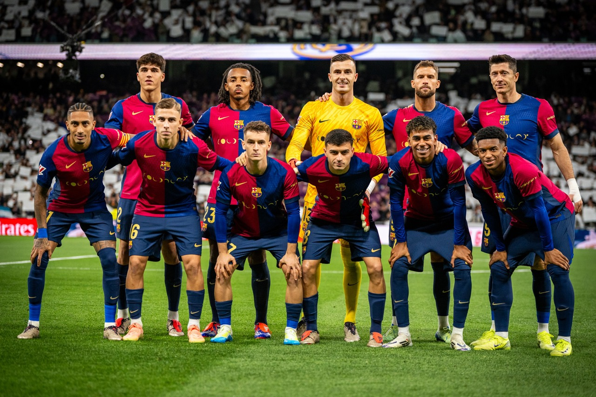
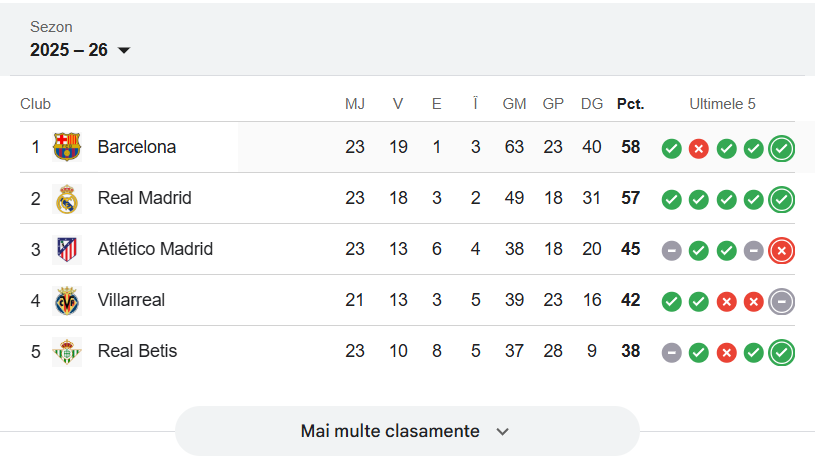
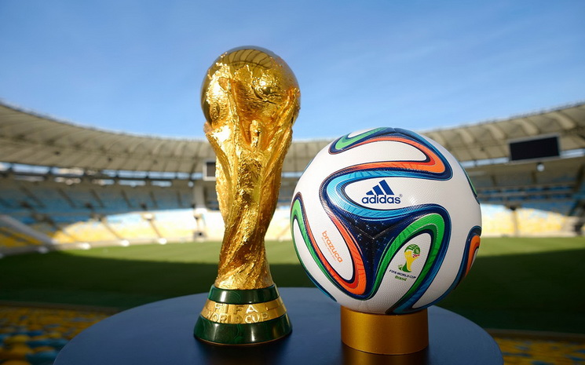

 |
 |
 |
Fotbalul înseamnă pasiune, echipă și adrenalină. De la meciurile de cartier până la Liga Campionilor, este sportul care unește lumea.
Ultimul meci al sezonului a decis campioana în minutele de prelungire. Un gol spectaculos din afara careului a adus victoria și trofeul.
Un jucător de top a semnat cu o echipă nouă, iar fanii sunt în extaz. Transferul este considerat unul dintre cele mai importante ale anului.
Un atacant a depășit recordul de goluri marcate într-un sezon, intrând în istoria fotbalului modern.
⬅ Înapoi la pagina principală